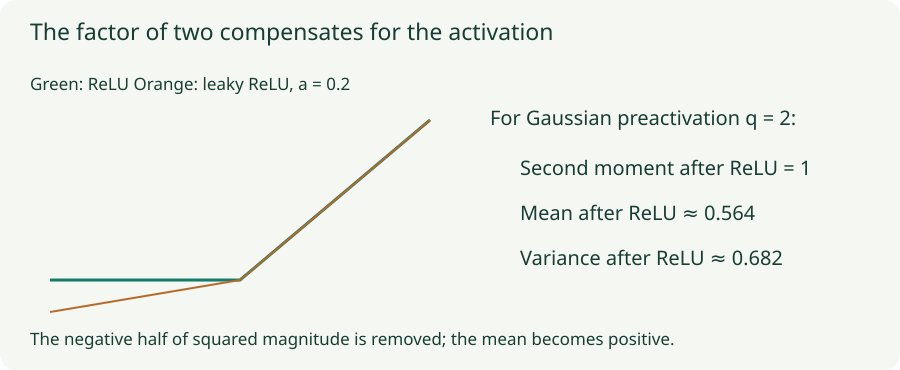

He Initialization: Account for the Activation
Derive ReLU and leaky-ReLU scaling and distinguish preserved second moments from activation variance.
A ReLU layer discards negative preactivations. If we initialize its weights as though the layer were linear, signal energy tends to shrink. He initialization compensates for that discarded second moment. The factor of two follows from the activation, rather than being an arbitrary enlargement of Xavier weights.
1. ReLU keeps half the second moment of a symmetric input
Let $z$ have a distribution symmetric about zero, with second moment $q_z=\mathbb E[z^2]$. ReLU returns $h=\max(0,z)$. Positive and negative halves contribute equally to $z^2$, while the negative half contributes zero after ReLU:
This statement requires symmetry and a finite second moment, not a Gaussian distribution. It concerns squared magnitude. It does not say the variance is halved, because ReLU also creates a positive mean.
2. The mean explains why variance is different
If we additionally assume $z\sim\mathcal N(0,q_z)$, then $\mathbb E[h]=\sqrt{q_z/(2\pi)}$. Subtracting its square from the second moment gives
For $q_z=2$, the post-ReLU second moment is 1, the mean is $1/\sqrt\pi\approx0.564$, and the variance is $1-1/\pi\approx0.682$. A measured activation variance near $0.68$ is therefore compatible with a preserved second moment of 1. It is not evidence that the derivation failed.
The next layer multiplies these positive-mean activations by fresh zero-mean weights. Under the initialization assumptions, its preactivation second moment depends on $\mathbb E[h^2]$, including both the variance and squared mean. That is why the recurrence tracks the second moment.

3. Derive the He variance
Combining the linear aggregation step with the activation step gives $q_l\approx\tfrac12n_{\rm in}v q_{l-1}$, where $v$ is weight variance. Setting the multiplier to one gives
He normal samples this variance from a normal distribution. He uniform uses bounds $\pm\sqrt{6/n_{\rm in}}$, because a uniform variable on $[-a,a]$ has variance $a^2/3$. With fan-in 100, the normal standard deviation is about $0.1414$ and the uniform bound is about $0.2449$.
For backward propagation, ReLU’s derivative is 1 on the positive half and 0 on the negative half. The analogous approximate gradient multiplier is $\tfrac12n_{\rm out}v$. A fan-out variant therefore uses $2/n_{\rm out}$ to prioritize backward per-coordinate scale. Equal widths make the forward and backward recipes agree; rectangular layers retain the tradeoff from the previous chapter.
4. Leaky ReLU changes the factor
For $\phi(z)=z$ when $z\ge0$ and $\phi(z)=az$ otherwise, the negative half contributes $a^2$ times its original squared magnitude. Therefore
The standard-deviation gain relative to fan-in scaling is $\sqrt{2/(1+a^2)}$. At $a=0$, this is ordinary ReLU and gain $\sqrt2$. At $a=1$, the activation is linear and the gain is 1. Those endpoints provide a useful sanity check.
For $a=0.2$ and fan-in 100, the variance is $2/104\approx0.01923$ and standard deviation approximately $0.13868$. PReLU may learn its negative slope; use the initial slope to choose the initial gain. Learning can subsequently change the assumptions that held at initialization.
5. Lab: preserve the appropriate quantity
ReLU through leaky ReLU to a linear activation
Each layer has width 32, with 48 Gaussian input examples and zero biases. Compare gain 1, ordinary ReLU He gain, and the slope-aware gain. The same seeded standard-normal draws are rescaled for each choice. Charts measure the sampled network; they do not force its moments to equal theory.
Start at slope zero and choose gain 1. Then select the slope-aware rule. Next move the slope to one: ordinary ReLU He scaling now over-amplifies a linear chain, whereas the slope-aware rule returns to gain 1. Compare the measured activation variance with its second moment rather than expecting them to coincide.
6. Why GELU and SiLU do not inherit an exact universal factor of two
ReLU and fixed-slope leaky ReLU are positively homogeneous: scaling the input by a positive constant scales the output by that constant. GELU and SiLU do not have that same property, so their second-moment ratio generally depends on the input scale.
For a chosen activation $\phi$, a useful initialization analysis studies $\mathbb E[\phi(\sqrt q Z)^2]$ and $\mathbb E[\phi'(\sqrt q Z)^2]$ for standard-normal $Z$. The first controls a forward moment recurrence; the second enters a backward recurrence. Numerical integration or sampled diagnostics can estimate these quantities, but a gain fitted at one variance need not preserve every scale or both propagation directions.
In a normalized residual architecture, the branch structure can matter more than a stand-alone activation gain. Follow the architecture’s complete initialization recipe, then verify signals on representative inputs. Treating every modern activation as “basically ReLU” can hide a substantial change after many layers.
7. Implementation and common mistakes
# He fan-in initialization for an ordinary ReLU layer.
torch.nn.init.kaiming_normal_(layer.weight, mode="fan_in",
nonlinearity="relu")
# For leaky ReLU, match the initial negative slope.
torch.nn.init.kaiming_normal_(layer.weight, a=0.2, mode="fan_in",
nonlinearity="leaky_relu")Use the initializer matching the activation actually following the matrix. A final linear prediction head does not automatically need the hidden ReLU layer’s gain. Check fan orientation for custom matrix layouts and account for grouped connectivity where appropriate.
A ReLU output being zero for some examples is expected. A unit that is inactive for every relevant example may be unable to learn through that path, especially after an unfavorable bias or update. He initialization reduces scale problems under its assumptions; it does not guarantee that no units become inactive during training.
Questions with answers
No. Its standard recurrence preserves the activation second moment in expectation under the stated assumptions. ReLU’s positive mean makes centered variance smaller.
Gain multiplies standard deviation. Variance is standard deviation squared, so gain $\sqrt2$ doubles variance.
It should recover linear fan-in scaling, because both positive and negative inputs pass through unchanged.
Sources
He et al., Delving Deep into Rectifiers; PyTorch initialization documentation. The Gaussian moment example and finite-network measurements make the second-moment convention explicit.